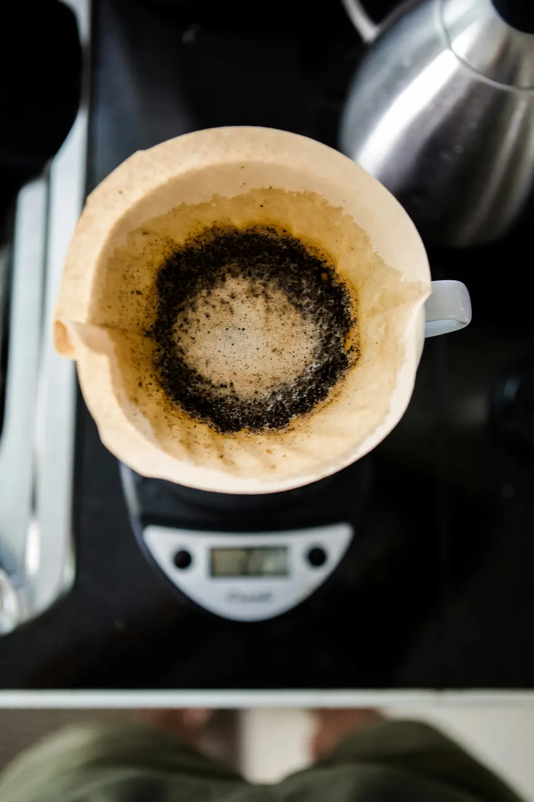

OPEN 9:00–18:00 水曜定休
お店のご案内 →OUR COFFEE
急がない朝に、
深煎りの一杯を。
すっきりとした苦味のブレンドを、ハンドドリップで。トーストには、バターを端まで。気取らず食べられるものを、温かいうちにお出しする喫茶店です。
お一人での読書も、二人での待ち合わせも。まずはお品書きから、ご覧ください。

MENU
いつものお品書き
珈琲
余白ブレンド
550円朝と昼に
バタートースト
400円珈琲のおともに
チーズケーキ
580円税込・サンプル料金。写真はメニューそのものではなくイメージです。
すべてのお品書きお席は、ご来店の順に。
席の予約は受け付けておりません。営業時間とご来店時の案内をご確認ください。